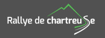
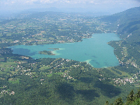

Rallye de Chartreuse :
Cette année, pour la dixième fois de son histoire, le rallye de Chartreuse passera par Saint Franc !!! Une spéciale est en effet prévue le samedi 31 août 2019.
|

|
Randonnées pédestres :
De nombreuses randonnées et balades familiales sont possibles dans le massif de la Chartreuse.
Les plus hauts sommets se trouvent à plus de 2000 m d'altitude. Ils offrent
un panorama exceptionnel pouvant aller jusqu'au Mont Blanc.
|
|
Les lacs :
Le camping est entouré de différents lacs. Le plus proche est le
Lac d'Aiguebelette, lac naturel le plus chaud de France à seulement 15 min du camping.
D'autres lacs remarquables se trouvent à proximité du camping : le lac du Bourget,
le lac de Romagnieu, le lac de Paladru et le lac d'Annecy. De nombreuses acitvités
sont possibles grâce à ces lacs : baignade, pêche, pédalo, aviron, etc...
|

|
Rivièr'Alp:
Une base naturelle pleine de loisirs : au coeur d'un parc naturel de plus de 7 hectares, au village des Echelles (à 6km du camping),
venez profiter de sa piscine écologique, de balades en vélo et venez découvrir les hydromachines au cours d'un promenade découverte
qui s'adresse à toute la famille.
|
|
Cano� :
Il est possible de faire du canoë sur le Guiers au départ de PONT DE BEAUVOISIN,
à 10 min du camping. Vous y découvrirez cette rivière exceptionnelle et ces berges.
|

|
Canyoning :
Plusieurs torrents à quelques minutes du camping permettent de faire du
canyoning avec différents degrés de difficultés : les Gorges du Grenan
ou les Gorges de Chailles.
|
|
Walibi :
Parc d'attraction
constitué de 22 attractions, 9 attractions aquatiques et 2 spectacles tout au
long de la saison. Ce site unique en Rhône-Alpes se trouve aux AVENIERES.
|
|
Accro-branches :
Il existe
deux parcs acrobatiques forestier : La forêt d'Emeraude à SAINT PIERRE DE CHARTREUSE
et Indian Forest au SAPPEY EN CHARTREUSE. Evoluez en liberté et à votre rythme
au coeur même du parc régional de Chartreuse. Testez vos qualités d'agilité,
d'équilibre et d'audace.
|
|